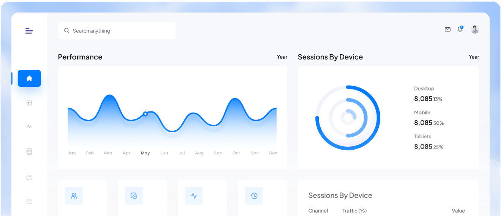
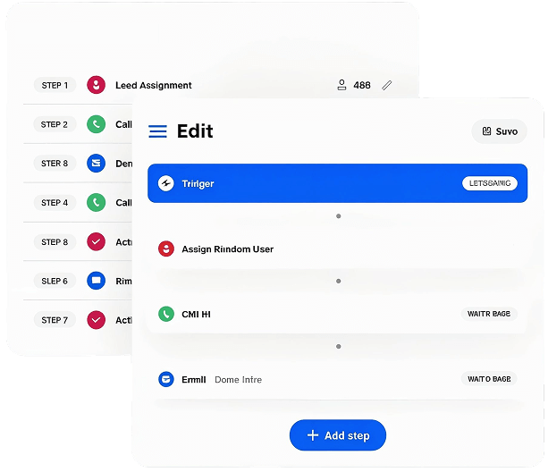
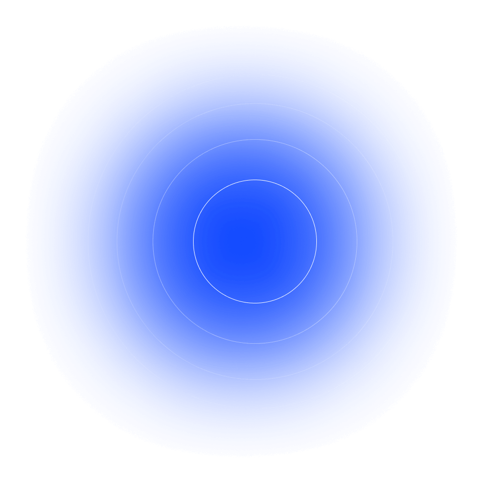
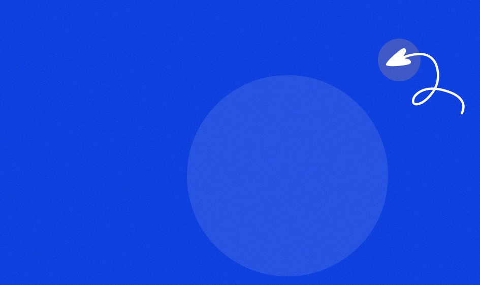
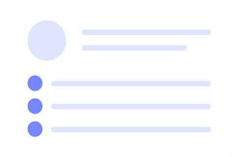
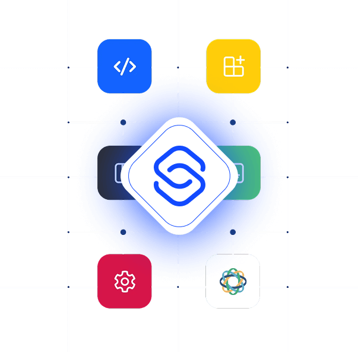

Your repository. Your canvas.
WireMark is the visual-first product environment for individual developers. Connect a GitHub, GitLab, or local repo, then wire, mark, and ship on the running product.
- Connect GitHub, GitLab, or local repos
- Review and trust the execution plan
- Invite-only access

Build the product you picture
Your repository becomes a live canvas. Mark up the product, and WireMark traces intent to source.
-
Visual-first
The running product is your primary workspace — observe, mark up, and implement without leaving the canvas. -
Source-ranked candidates
Mark up the product and WireMark surfaces ranked source candidates, so attribution stays honest and reversible. -
Verify in the browser
Locked selectors stay authoritative, and every change is checked at the viewports that matter before you approve.


From repository to running product
01
Connect a repository and trust the plan
02
Mark up, implement, and verify each change
A running preview, a marked-up change, a verified result — the whole loop stays inside WireMark.
The full loop, on your terms
A focused workflow for one builder — wire it, mark it,
and ship it without switching tools.
-
Connect & trust
Bring in a GitHub, GitLab, or local repository. Review the execution plan, then start building over the live canvas.
01 -
Mark up the canvas
Point at the running product and say what should change. WireMark maps your intent back to the source behind it.
02 -
Locked selectors
Set authoritative selectors so experiments stay honest — a DOM-only change is not a completed source change.
03 -
App-owned worktrees
Try visual source alternatives in isolated Git worktrees, without ever touching your working tree.
04 -
Attributable changes
Every edit carries a visual target, ranked source candidates, and a reversible change set you can review.
05 -
Verify & approve
Check the rendered result at the viewports that matter before you approve — evidence is part of the loop.
06


Work where the product runs
A tour of the loop

Built for the way you actually build
The running product is the primary surface. Monaco, files, Git, the terminal, and raw logs live in the secondary Implementation workspace when you need them.
Observe the live canvas, mark up what should change, express intent, implement, compare, and verify in the browser — then approve or revert.
Yes. WireMark connects GitHub, GitLab, or a local repository, reviews the execution plan, and keeps your working tree clean while you experiment.
One surface, from
repository to result
One surface holds the running product, the markup, and the evidence — no switching tools.